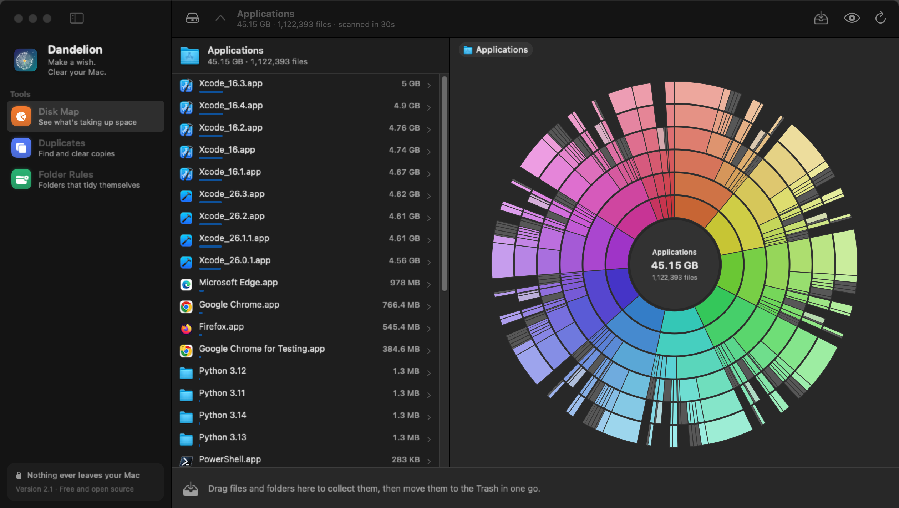

Disk Map
Your whole disk as a sunburst, so the giant forgotten folders jump right out.
- Click to dive in, click the middle to come back up, hover anything to see its size.
- Collect as you go. Drag files to the bar at the bottom, then send them all to the Trash at once.
- Sizes that add up. Hidden system space gets its own grey slice, and hard links count once.
- Fast. Scans in parallel across every core, reading folders in big batches.
A free alternative to DaisyDisk
